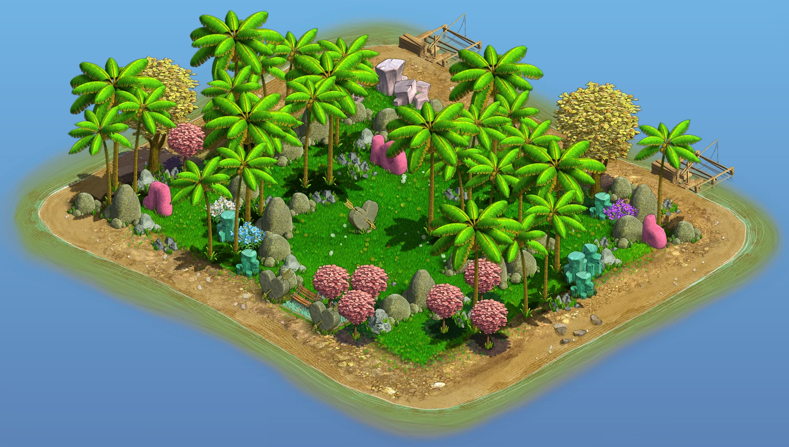

Получено: файл; исходный URL. Скриншот локации; оригинал 2000×1135 px.


Остров Любви
Социальная версия; 09.01.2014- Тип
- Острова
- Версия и дата
- Социальная версия; 09.01.2014
Данные по источнику · Социальная версия · 09.01.2014
Предварительно: ЗомбиСити и ZombieLend содержат совпадающие текст и материалы; не считать независимыми подтверждениями.. Требуется сверка.
- Доступ
- Пристань на Домашнем острове.
- Пристань · стадия 1
- 20 досок, 20 гвоздей, 50 любви; 300 опыта.
- Пристань · стадия 2
- 1 капитан, 20 жёлтой краски, 20 пружин; 500 опыта.
- Переходы
- Недостроенные пристани на острова Майя и Х.
- Ресурсы
- Брёвна, камни, брёвна пальмы, зелёный и белый мрамор.
- Описание и доступ (исторический источник)
- Остров Любви один из самых красивых островов, глядя на него, даже жалко вырубать ресурсы, чтобы не портить природу. Чтобы попасть на Остров Любви, нужно достроить пристань, которая находится на Домашнем острове. На Острове Любви находятся 2-е недостроенные пристани, которые веду на Остров Майя и Остров Х.
Данные по источнику · браузерная «Зомби Ферма» / «Зомби Мания»; платформа не уточнена · снимок каталога 10.12.2019; дата редакции неизвестна
Предварительно: Фанатский каталог; возможны общие картинки для разных локаций и зависимость от других источников.. Требуется сверка.
- Каталог
- В разделе «Домашние Острова Зомби Фермы» указана локация «Остров Любви».
- Оговорка
- Каталог показывает название, картинку и ссылку; отдельная статья по этой ссылке не прочитана в рамках этого импорта. Условия доступа и версии требуют проверки.
- Сравнение снимков
- Эта же подпись, раздел и адрес картинки присутствуют в снимке того же каталога 14.09.2018; это не независимое подтверждение.
Связанные сущности
нет проверенных связей — требуется сверка.